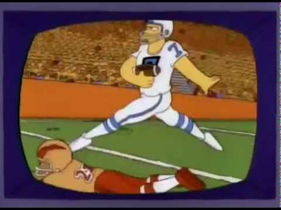

As the (fantasy) regular season nears its end, some of us are ready to be put out of our misery, some of us are locked into the playoffs and then there’s the spicy middle. Let’s focus on those guys in the gooey center today!
Matchup of the Week
*️⃣ Sweet Brotha Numpsay (6-5) v. Justin and the Blazettes (6-5) *️⃣ Andy’s got his work cut out after a -1 from the Lions, facing Pangy’s Niners who are off to a good start. The loser of this game is all-but-eliminated from the playoff mix.
What to Watch: Samuel and the Niners D have 37.4 from Thursday, while Andy has Swift on deck. This midseason trade comes back with a vengeance this week.
Waiver Wire Wizard
Ain’t nobody got money or doing anything good with it. How about Tony plugging Isiah Likely in, though, for $2.
Cries for Help
KJT with the $11 Bengals D bid. They’re playing a rough Steelers offense, but I imagine they’ll be on the field a lot with no Burrow.
Playoff Hunt
👑PJ - Wins matter! (8-3, PF 1312.74, W2)
Fifth in PF, but at least the PF is respectable. PJ looks to be locked in, but technically no one is yet. A win and he’s in.
2. Tony - The resurrection of the Sluter! (7-4, 1442.00, W5)
He came alll the way back and looks to be most dangerous, on a five-game winning streak. The PF difference is going to make Tony tough to knock out.
3. CJ - Vegas Money (7-4, PF 1446.94, L1)
The odds-on favorite from what I hear out of Vegas. I’ve liked this team for weeks. Again, the PF make CJ pretty tough to knock out.
4. Tua Williams One Kupp (6-5, 1395.20, L3)
This week, Seif has the easiest matchup of the last two weeks for the playoff teams against Neil. The clear cut PF leader in the 6-5 pack. But the next two guys play this week, so someone is coming out with seven wins. Dear lord, will someone knock him out, please.
5. Sweet Brotha Numpsay (6-5, 1252.86, W3)
He has defied me all year, why not get into the playoffs? Kyren Williams gives YP a good boost, but will Achane be missed? Pacheco has been very Pacheco after a mid-season extra-Pacheco run.
6. Justin and the Blazettes (6-5, 1284.52, w2)
You know when you’re on day three of a festival and all the drugs are drying up and the serotonin is drained? Some people want to go home early, some people fight through that and make day three the best. Andy’s definitely made the best of the season as probably the most active manager… what’s it gonna be for the final run, Turner?
Playoff Prediction
- PJ, Tony and CJ are in.
- Pangy beats Andy this week, while Seif beats Neil. Next week decides it all and the PF won’t matter, as Pangy will upset Tony (without JA and Addison on byes), and Seif crumbles at CJ’s feet. Andy ends up 6-6, 6th seed 😈
Stupid Sexy Slutlers
(more coming on these fucking losers next week)
7. Me 8. Joel 9. Kris 10. Neil
Steph Curry don’t ever stop shooting. I’m a keep letting it ride.
- CJ Stroud
Some good advice to all of us the last few weeks, the playoffs, the sluttler bracket and of course chasing losses.